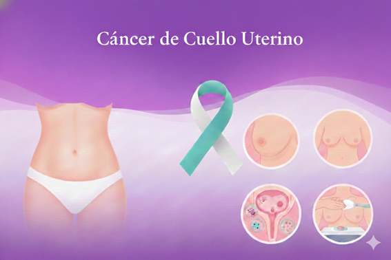

Cáncer de Cuello Uterino: Prevención y Atención en Cochabamba, Bolivia
El cáncer de cuello uterino es un problema de salud pública prioritario en Bolivia, con la tasa de mortalidad más alta de América. La buena noticia es que es prevenible y curable si se detecta a tiempo.

1. Información General: Entendiendo la Enfermedad
El cáncer de cuello uterino es un crecimiento anormal de células en el cérvix (la parte baja y estrecha del útero que se conecta con la vagina).
Causa Principal: La infección persistente por tipos de alto riesgo del Virus del Papiloma Humano (VPH) es la causa de casi todos los casos. El VPH se transmite principalmente por contacto sexual.
Proceso Lento: El cáncer no aparece de un día para otro. Generalmente, hay cambios precancerosos (lesiones) que tardan años en desarrollarse. La detección temprana de estas lesiones es clave.
Síntomas Tardíos: En sus inicios, la enfermedad es silenciosa. Cuando hay síntomas, el cáncer suele estar más avanzado. Estos pueden incluir:
Sangrado vaginal inusual (entre períodos menstruales, después de la menopausia o tras relaciones sexuales).
Flujo vaginal inusual, que puede ser acuoso, con sangre o tener un olor desagradable.
Dolor pélvico o dolor durante las relaciones sexuales.
2. Cuidados y Prevención: El Plan Nacional de Bolivia hacia 2030
Bolivia ha presentado un plan para la eliminación del cáncer de cuello uterino, alineado con las metas globales de la OMS (90-70-90). La prevención se basa en tres pilares:
A. Vacunación contra el VPH
Es la medida de prevención primaria más efectiva.
Gratuita y Universal: El Ministerio de Salud y Deportes garantiza la vacuna gratuita en todo el país.
Población Objetivo: Niñas, niños y adolescentes de 10 a 14 años.
¿Por qué vacunar a los niños? Porque también son portadores y transmisores del virus.
B. Tamizaje (Detección Temprana)
Los exámenes regulares son vitales para identificar lesiones antes de que se conviertan en cáncer.
Prueba de Papanicolaou (PAP): Recomendada para mujeres desde los 25 años. Si el resultado es normal, se sugiere cada tres años. Es un procedimiento rápido, simple y gratuito en los centros de salud públicos.
Test del VPH (Captura Híbrida): Una prueba más moderna y precisa que busca la presencia del virus de alto riesgo. Está disponible de forma gratuita para mujeres de 30 a 60 años.
C. Estilo de Vida y Otras Medidas
Relaciones Sexuales Seguras: El uso de preservativos ayuda a reducir el riesgo de transmisión del VPH y otras ITS.
No Fumar: El tabaquismo debilita el sistema inmunológico y aumenta el riesgo de desarrollar cáncer de cuello uterino si ya existe una infección por VPH.
3. ¿Dónde acudir en Cochabamba?
El Sistema Único de Salud (SUS) garantiza la atención y el tratamiento oncológico integral de forma gratuita (incluyendo quimioterapia, radioterapia y medicina nuclear).
Centros de Atención Pública (Gratuita con SUS)
Hospital Materno Infantil Germán Urquidi: Referente departamental para diagnóstico y tratamiento especializado, con unidad de oncología y quimioterapia.
Ubicación aproximada: Av. Germán Urquidi, entre calles Colombia y Ecuador.
Hospital del Sud: Ofrece servicios de ginecología y detección.
Ubicación aproximada: Av. Petrolera km 3, a la altura de la parada al Valle Alto.
Centros de Salud de Primer Nivel: Para pruebas de detección (PAP y Test VPH gratuito), puedes ir al centro de salud más cercano a tu domicilio.
Centros Especializados Privados y ONGs
CIES Salud Integral - Cochabamba: Ofrecen servicios preventivos y de diagnóstico a precios accesibles.
Clínica CIES: Calle Junín #687 (entre Ayacucho y Santiváñez).
Centro Médico CIES: Calle Uruguay #436 (entre 25 de Mayo y San Martín).
Contacto: Call Center 800112437.
SEDES Cochabamba (Servicio Departamental de Salud): Coordina las campañas de salud y programas de prevención en el departamento.
Ubicación: Av. Aniceto Arce (frente al Hospital Viedma).
Recuerda: La prevención está en tus manos. Una simple prueba o una vacuna puede salvar una vida.